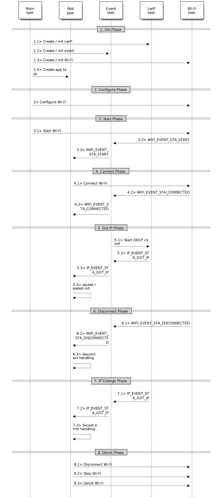
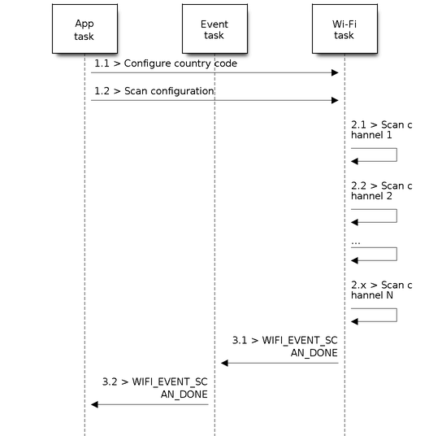
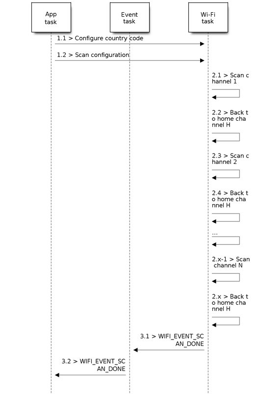
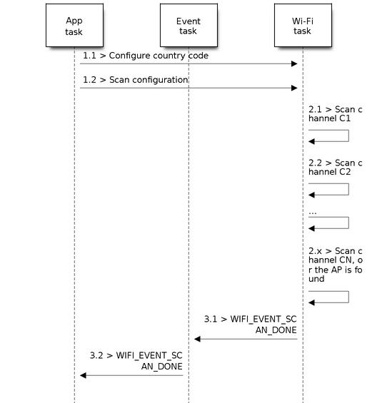
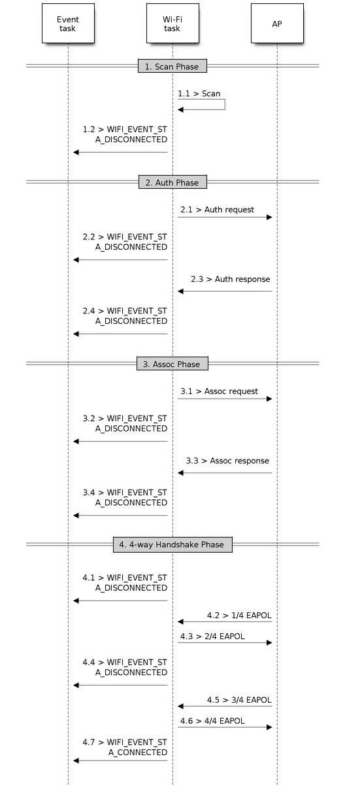

Station Scenarios
ESP32-C3 Wi-Fi Station General Scenario
Below is a "big scenario" which describes some small scenarios in station mode:

Sample Wi-Fi Event Scenarios in Station Mode
1. Wi-Fi/LwIP Init Phase
s1.1: The main task calls
esp_netif_init()to create an LwIP core task and initialize LwIP-related work.s1.2: The main task calls
esp_event_loop_create()to create a system Event task and initialize an application event's callback function. In the scenario above, the application event's callback function does nothing but relaying the event to the application task.s1.3: The main task calls
esp_netif_create_default_wifi_ap()oresp_netif_create_default_wifi_sta()to create default network interface instance binding station or AP with TCP/IP stack.s1.4: The main task calls
esp_wifi_init()to create the Wi-Fi driver task and initialize the Wi-Fi driver.s1.5: The main task calls OS API to create the application task.
Step 1.1 ~ 1.5 is a recommended sequence that initializes a Wi-Fi-/LwIP-based application. However, it is NOT a must-follow sequence, which means that you can create the application task in step 1.1 and put all other initialization in the application task. Moreover, you may not want to create the application task in the initialization phase if the application task depends on the sockets. Rather, you can defer the task creation until the IP is obtained.
2. Wi-Fi Configuration Phase
Once the Wi-Fi driver is initialized, you can start configuring the Wi-Fi driver. In this scenario, the mode is station, so you may need to call esp_wifi_set_mode() (WIFI_MODE_STA) to configure the Wi-Fi mode as station. You can call other esp_wifi_set_xxx APIs to configure more settings, such as the protocol mode, the country code, and the bandwidth. Refer to ESP32-C3 Wi-Fi Configuration.
Generally, the Wi-Fi driver should be configured before the Wi-Fi connection is set up. But this is NOT mandatory, which means that you can configure the Wi-Fi connection anytime, provided that the Wi-Fi driver is initialized successfully. However, if the configuration does not need to change after the Wi-Fi connection is set up, you should configure the Wi-Fi driver at this stage, because the configuration APIs (such as esp_wifi_set_protocol()) will cause the Wi-Fi to reconnect, which may not be desirable.
If the Wi-Fi NVS flash is enabled by menuconfig, all Wi-Fi configuration in this phase, or later phases, will be stored into flash. When the board powers on/reboots, you do not need to configure the Wi-Fi driver from scratch. You only need to call esp_wifi_get_xxx APIs to fetch the configuration stored in flash previously. You can also configure the Wi-Fi driver if the previous configuration is not what you want.
3. Wi-Fi Start Phase
s3.1: Call
esp_wifi_start()to start the Wi-Fi driver.s3.2: The Wi-Fi driver posts WIFI_EVENT_STA_START to the event task; then, the event task will do some common things and will call the application event callback function.
s3.3: The application event callback function relays the WIFI_EVENT_STA_START to the application task. We recommend that you call
esp_wifi_connect(). However, you can also callesp_wifi_connect()in other phrases after the WIFI_EVENT_STA_START arises.
4. Wi-Fi Connect Phase
s4.1: Once
esp_wifi_connect()is called, the Wi-Fi driver will start the internal scan/connection process.s4.2: If the internal scan/connection process is successful, the WIFI_EVENT_STA_CONNECTED will be generated. In the event task, it starts the DHCP client, which will finally trigger the DHCP process.
s4.3: In the above-mentioned scenario, the application event callback will relay the event to the application task. Generally, the application needs to do nothing, and you can do whatever you want, e.g., print a log.
In step 4.2, the Wi-Fi connection may fail because, for example, the password is wrong, or the AP is not found. In a case like this, WIFI_EVENT_STA_DISCONNECTED will arise and the reason for such a failure will be provided. For handling events that disrupt Wi-Fi connection, please refer to phase 6.
5. Wi-Fi 'Got IP' Phase
s5.1: Once the DHCP client is initialized in step 4.2, the got IP phase will begin.
s5.2: If the IP address is successfully received from the DHCP server, then IP_EVENT_STA_GOT_IP will arise and the event task will perform common handling.
s5.3: In the application event callback, IP_EVENT_STA_GOT_IP is relayed to the application task. For LwIP-based applications, this event is very special and means that everything is ready for the application to begin its tasks, e.g., creating the TCP/UDP socket. A very common mistake is to initialize the socket before IP_EVENT_STA_GOT_IP is received. DO NOT start the socket-related work before the IP is received.
6. Wi-Fi Disconnect Phase
s6.1: When the Wi-Fi connection is disrupted, e.g., the AP is powered off or the RSSI is poor, WIFI_EVENT_STA_DISCONNECTED will arise. This event may also arise in phase 3. Here, the event task will notify the LwIP task to clear/remove all UDP/TCP connections. Then, all application sockets will be in a wrong status. In other words, no socket can work properly when this event happens.
s6.2: In the scenario described above, the application event callback function relays WIFI_EVENT_STA_DISCONNECTED to the application task. The recommended actions are: 1) call
esp_wifi_connect()to reconnect the Wi-Fi, 2) close all sockets, and 3) re-create them if necessary. For details, please refer to WIFI_EVENT_STA_DISCONNECTED.
7. Wi-Fi IP Change Phase
s7.1: If the IP address is changed, the IP_EVENT_STA_GOT_IP will arise with "ip_change" set to true.
s7.2: This event is important to the application. When it occurs, the timing is good for closing all created sockets and recreating them.
8. Wi-Fi Deinit Phase
s8.1: Call
esp_wifi_disconnect()to disconnect the Wi-Fi connectivity.s8.2: Call
esp_wifi_stop()to stop the Wi-Fi driver.s8.3: Call
esp_wifi_deinit()to unload the Wi-Fi driver.
ESP32-C3 Wi-Fi Scan
Currently, the esp_wifi_scan_start() API is supported only in station or station/AP mode.
Scan Type
Mode |
Description |
|---|---|
Active Scan |
Scan by sending a probe request. The default scan is an active scan. |
Passive Scan |
No probe request is sent out. Just switch to the specific channel and wait for a beacon. Application can enable it via the scan_type field of |
Foreground Scan |
This scan is applicable when there is no Wi-Fi connection in station mode. Foreground or background scanning is controlled by the Wi-Fi driver and cannot be configured by the application. |
Background Scan |
This scan is applicable when there is a Wi-Fi connection in station mode or in station/AP mode. Whether it is a foreground scan or background scan depends on the Wi-Fi driver and cannot be configured by the application. |
All-Channel Scan |
It scans all of the channels. If the channel field of |
Specific Channel Scan |
It scans specific channels only. If the channel field of |
The scan modes in above table can be combined arbitrarily, so there are in total 8 different scans:
All-Channel Background Active Scan
All-Channel Background Passive Scan
All-Channel Foreground Active Scan
All-Channel Foreground Passive Scan
Specific-Channel Background Active Scan
Specific-Channel Background Passive Scan
Specific-Channel Foreground Active Scan
Specific-Channel Foreground Passive Scan
Scan Configuration
The scan type and other per-scan attributes are configured by esp_wifi_scan_start(). The table below provides a detailed description of wifi_scan_config_t.
Field |
Description |
|---|---|
ssid |
If the SSID is not NULL, it is only the AP with the same SSID that can be scanned. |
bssid |
If the BSSID is not NULL, it is only the AP with the same BSSID that can be scanned. |
channel |
If “channel” is 0, there will be an all-channel scan; otherwise, there will be a specific-channel scan. |
show_hidden |
If “show_hidden” is 0, the scan ignores the AP with a hidden SSID; otherwise, the scan considers the hidden AP a normal one. |
scan_type |
If “scan_type” is WIFI_SCAN_TYPE_ACTIVE, the scan is “active”; otherwise, it is a “passive” one. |
scan_time |
This field is used to control how long the scan dwells on each channel. For passive scans, scan_time.passive designates the dwell time for each channel. For active scans, dwell times for each channel are listed in the table below. Here, min is short for scan time.active.min and max is short for scan_time.active.max.
If you want to improve the performance of the scan, you can try to modify these two parameters. |
There are also some global scan attributes which are configured by API esp_wifi_set_config(), refer to Station Basic Configuration.
Scan All APs on All Channels (Foreground)
Scenario:

Foreground Scan of all Wi-Fi Channels
The scenario above describes an all-channel, foreground scan. The foreground scan can only occur in station mode where the station does not connect to any AP. Whether it is a foreground or background scan is totally determined by the Wi-Fi driver, and cannot be configured by the application.
Detailed scenario description:
Scan Configuration Phase
s1.1: Call
esp_wifi_set_country()to set the country info if the default country info is not what you want. Refer to Wi-Fi Country Code.s1.2: Call
esp_wifi_scan_start()to configure the scan. To do so, you can refer to Scan Configuration. Since this is an all-channel scan, just set the SSID/BSSID/channel to 0.
Wi-Fi Driver's Internal Scan Phase
s2.1: The Wi-Fi driver switches to channel 1. In this case, the scan type is WIFI_SCAN_TYPE_ACTIVE, and a probe request is broadcasted. Otherwise, the Wi-Fi will wait for a beacon from the APs. The Wi-Fi driver will stay in channel 1 for some time. The dwell time is configured in min/max time, with the default value being 120 ms.
s2.2: The Wi-Fi driver switches to channel 2 and performs the same operation as in step 2.1.
s2.3: The Wi-Fi driver scans the last channel N, where N is determined by the country code which is configured in step 1.1.
Scan-Done Event Handling Phase
s3.1: When all channels are scanned, WIFI_EVENT_SCAN_DONE will arise.
s3.2: The application's event callback function notifies the application task that WIFI_EVENT_SCAN_DONE is received.
esp_wifi_scan_get_ap_num()is called to get the number of APs that have been found in this scan. Then, it allocates enough entries and callsesp_wifi_scan_get_ap_records()to get the AP records. Please note that the AP records in the Wi-Fi driver will be freed onceesp_wifi_scan_get_ap_records()is called. Do not callesp_wifi_scan_get_ap_records()twice for a single scan-done event. Ifesp_wifi_scan_get_ap_records()is not called when the scan-done event occurs, the AP records allocated by the Wi-Fi driver will not be freed. So, make sure you callesp_wifi_scan_get_ap_records(), yet only once.
Scan All APs on All Channels (Background)
Scenario:

Background Scan of all Wi-Fi Channels
The scenario above is an all-channel background scan. Compared to Scan All APs on All Channels (Foreground) , the difference in the all-channel background scan is that the Wi-Fi driver will scan the back-to-home channel for 30 ms before it switches to the next channel to give the Wi-Fi connection a chance to transmit/receive data.
Scan for Specific AP on All Channels
Scenario:

Scan of specific Wi-Fi Channels
This scan is similar to Scan All APs on All Channels (Foreground). The differences are:
s1.1: In step 1.2, the target AP will be configured to SSID/BSSID.
s2.1 ~ s2.N: Each time the Wi-Fi driver scans an AP, it will check whether it is a target AP or not. If the scan is
WIFI_FAST_SCANscan and the target AP is found, then the scan-done event will arise and scanning will end; otherwise, the scan will continue. Please note that the first scanned channel may not be channel 1, because the Wi-Fi driver optimizes the scanning sequence.
It is a possible situation that there are multiple APs that match the target AP info, e.g., two APs with the SSID of "ap" are scanned. In this case, if the scan is WIFI_FAST_SCAN, then only the first scanned "ap" will be found. If the scan is WIFI_ALL_CHANNEL_SCAN, both "ap" will be found and the station will connect the "ap" according to the configured strategy. Refer to Station Basic Configuration.
You can scan a specific AP, or all of them, in any given channel. These two scenarios are very similar.
Scan in Wi-Fi Connect
When esp_wifi_connect() is called, the Wi-Fi driver will try to scan the configured AP first. The scan in "Wi-Fi Connect" is the same as Scan for Specific AP On All Channels, except that no scan-done event will be generated when the scan is completed. If the target AP is found, the Wi-Fi driver will start the Wi-Fi connection; otherwise, WIFI_EVENT_STA_DISCONNECTED will be generated. Refer to Scan for Specific AP On All Channels.
Scan in Blocked Mode
If the block parameter of esp_wifi_scan_start() is true, then the scan is a blocked one, and the application task will be blocked until the scan is done. The blocked scan is similar to an unblocked one, except that no scan-done event will arise when the blocked scan is completed.
Parallel Scan
Two application tasks may call esp_wifi_scan_start() at the same time, or the same application task calls esp_wifi_scan_start() before it gets a scan-done event. Both scenarios can happen. However, the Wi-Fi driver does not support multiple concurrent scans adequately. As a result, concurrent scans should be avoided. Support for concurrent scan will be enhanced in future releases, as the ESP32-C3's Wi-Fi functionality improves continuously.
Scan When Wi-Fi Is Connecting
The esp_wifi_scan_start() fails immediately if the Wi-Fi is connecting, because the connecting has higher priority than the scan. If scan fails because of connecting, the recommended strategy is to delay for some time and retry scan again. The scan will succeed once the connecting is completed.
However, the retry/delay strategy may not work all the time. Considering the following scenarios:
The station is connecting a non-existing AP or it connects the existing AP with a wrong password, it always raises the event WIFI_EVENT_STA_DISCONNECTED.
The application calls
esp_wifi_connect()to reconnect on receiving the disconnect event.Another application task, e.g., the console task, calls
esp_wifi_scan_start()to do scan, the scan always fails immediately because the station keeps connecting.When scan fails, the application simply delays for some time and retries the scan.
In the above scenarios, the scan will never succeed because the connecting is in process. So if the application supports similar scenario, it needs to implement a better reconnection strategy. For example:
The application can choose to define a maximum continuous reconnection counter and stop reconnecting once the counter reaches the maximum.
The application can choose to reconnect immediately in the first N continuous reconnection, then give a delay sometime and reconnect again.
The application can define its own reconnection strategy to avoid the scan starve to death. Refer to Wi-Fi Reconnect.
ESP32-C3 Wi-Fi Station Connecting Scenario
This scenario depicts the case if only one target AP is found in the scan phase. For scenarios where more than one AP with the same SSID is found, refer to ESP32-C3 Wi-Fi Station Connecting When Multiple APs Are Found.
Generally, the application can ignore the connecting process. Below is a brief introduction to the process for those who are really interested.
Scenario:

Wi-Fi Station Connecting Process
Scan Phase
s1.1: The Wi-Fi driver begins scanning in "Wi-Fi Connect". Refer to Scan in Wi-Fi Connect for more details.
s1.2: If the scan fails to find the target AP, WIFI_EVENT_STA_DISCONNECTED will arise and the reason code could either be
WIFI_REASON_NO_AP_FOUNDorWIFI_REASON_NO_AP_FOUND_W_COMPATIBLE_SECURITYorWIFI_REASON_NO_AP_FOUND_IN_AUTHMODE_THRESHOLDorWIFI_REASON_NO_AP_FOUND_IN_RSSI_THRESHOLDdepending of the Station's configuration. Refer to Wi-Fi Reason Code.
Auth Phase
s2.1: The authentication request packet is sent and the auth timer is enabled.
s2.2: If the authentication response packet is not received before the authentication timer times out, WIFI_EVENT_STA_DISCONNECTED will arise and the reason code will be
WIFI_REASON_AUTH_EXPIRE. Refer to Wi-Fi Reason Code.s2.3: The auth-response packet is received and the auth-timer is stopped.
s2.4: The AP rejects authentication in the response and WIFI_EVENT_STA_DISCONNECTED arises, while the reason code is
WIFI_REASON_AUTH_FAILor the reasons specified by the AP. Refer to Wi-Fi Reason Code.
Association Phase
s3.1: The association request is sent and the association timer is enabled.
s3.2: If the association response is not received before the association timer times out, WIFI_EVENT_STA_DISCONNECTED will arise and the reason code will be
WIFI_REASON_DISASSOC_DUE_TO_INACTIVITY. Refer to Wi-Fi Reason Code.s3.3: The association response is received and the association timer is stopped.
s3.4: The AP rejects the association in the response and WIFI_EVENT_STA_DISCONNECTED arises, while the reason code is the one specified in the association response. Refer to Wi-Fi Reason Code.
Four-way Handshake Phase
s4.1: The handshake timer is enabled, and the 1/4 EAPOL is not received before the handshake timer expires. WIFI_EVENT_STA_DISCONNECTED will arise and the reason code will be
WIFI_REASON_HANDSHAKE_TIMEOUT. Refer to Wi-Fi Reason Code.s4.2: The 1/4 EAPOL is received.
s4.3: The station replies 2/4 EAPOL.
s4.4: If the 3/4 EAPOL is not received before the handshake timer expires, WIFI_EVENT_STA_DISCONNECTED will arise and the reason code will be
WIFI_REASON_HANDSHAKE_TIMEOUT. Refer to Wi-Fi Reason Code.s4.5: The 3/4 EAPOL is received.
s4.6: The station replies 4/4 EAPOL.
s4.7: The station raises WIFI_EVENT_STA_CONNECTED.
Wi-Fi Reason Code
The table below shows the reason-code defined in ESP32-C3. The first column is the macro name defined in esp_wifi/include/esp_wifi_types.h. The common prefix WIFI_REASON is removed, which means that UNSPECIFIED actually stands for WIFI_REASON_UNSPECIFIED and so on. The second column is the value of the reason. This reason value is same as defined in section 9.4.1.7 of IEEE 802.11-2020. (For more information, refer to the standard mentioned above.) The last column describes the reason. Reason-codes starting from 200 are Espressif defined reason-codes and are not part of IEEE 802.11-2020.
Also note that REASON_NO_AP_FOUND_XXX codes are mentioned in increasing order of importance. So if a single AP has a combination of the above reasons for failure, the more important one will be reported. Additionally, if there are multiple APs that satisfy the identifying criteria and connecting to all of them fails for different reasons mentioned above, then the reason code reported is for the AP that failed connection due to the least important reason code, as it was the one closest to a successful connection.
Following reason codes are renamed to their shorter form to wrap the table in page width.
TRANSMISSION_LINK_ESTABLISHMENT_FAILED : TX_LINK_EST_FAILED
NO_AP_FOUND_W_COMPATIBLE_SECURITY : NO_AP_FOUND_SECURITY
NO_AP_FOUND_IN_AUTHMODE_THRESHOLD : NO_AP_FOUND_AUTHMODE
NO_AP_FOUND_IN_RSSI_THRESHOLD : NO_AP_FOUND_RSSI
Reason code |
Value |
Description |
|---|---|---|
UNSPECIFIED |
1 |
Generally, it means an internal failure, e.g., the memory runs out, the internal TX fails, or the reason is received from the remote side. |
AUTH_EXPIRE |
2 |
The previous authentication is no longer valid. For the ESP station, this reason is reported when:
For the ESP AP, this reason is reported when:
|
AUTH_LEAVE |
3 |
De-authenticated, because the sending station is leaving (or has left). For the ESP station, this reason is reported when:
|
DISASSOC_DUE_TO_INACTIVITY |
4 |
Disassociated due to inactivity. For the ESP station, this reason is reported when:
|
ASSOC_TOOMANY |
5 |
Disassociated, because the AP is unable to handle all currently associated STAs at the same time. For the ESP station, this reason is reported when:
For the ESP AP, this reason is reported when:
|
CLASS2_FRAME_FROM_NONAUTH_STA |
6 |
Class-2 frame received from a non-authenticated STA. For the ESP station, this reason is reported when:
For the ESP AP, this reason is reported when:
|
CLASS3_FRAME_FROM_NONASSOC_STA |
7 |
Class-3 frame received from a non-associated STA. For the ESP station, this reason is reported when:
For the ESP AP, this reason is reported when:
|
ASSOC_LEAVE |
8 |
Disassociated, because the sending station is leaving (or has left) BSS. For the ESP station, this reason is reported when:
|
ASSOC_NOT_AUTHED |
9 |
station requesting (re)association is not authenticated by the responding STA. For the ESP station, this reason is reported when:
For the ESP AP, this reason is reported when:
|
DISASSOC_PWRCAP_BAD |
10 |
Disassociated, because the information in the Power Capability element is unacceptable. For the ESP station, this reason is reported when:
|
DISASSOC_SUPCHAN_BAD |
11 |
Disassociated, because the information in the Supported Channels element is unacceptable. For the ESP station, this reason is reported when:
|
BSS_TRANSITION_DISASSOC |
12 |
AP wants us to move to another AP, sent as a part of BTM procedure. Please note that when station is sending BTM request and moving to another AP, ROAMING reason code will be reported instead of this. For the ESP station, this reason is reported when:
|
IE_INVALID |
13 |
Invalid element, i.e., an element whose content does not meet the specifications of the Standard in frame formats clause. For the ESP station, this reason is reported when:
For the ESP AP, this reason is reported when:
|
MIC_FAILURE |
14 |
Message integrity code (MIC) failure. For the ESP station, this reason is reported when:
|
4WAY_HANDSHAKE_TIMEOUT |
15 |
Four-way handshake times out. For legacy reasons, in ESP this reason code is replaced with For the ESP station, this reason is reported when:
|
GROUP_KEY_UPDATE_TIMEOUT |
16 |
Group-Key Handshake times out. For the ESP station, this reason is reported when:
|
IE_IN_4WAY_DIFFERS |
17 |
The element in the four-way handshake is different from the (Re-)Association Request/Probe and Response/Beacon frame. For the ESP station, this reason is reported when:
|
GROUP_CIPHER_INVALID |
18 |
Invalid group cipher. For the ESP station, this reason is reported when:
|
PAIRWISE_CIPHER_INVALID |
19 |
Invalid pairwise cipher. For the ESP station, this reason is reported when:
|
AKMP_INVALID |
20 |
Invalid AKMP. For the ESP station, this reason is reported when: - it is received from the AP. |
UNSUPP_RSN_IE_VERSION |
21 |
Unsupported RSNE version. For the ESP station, this reason is reported when:
|
INVALID_RSN_IE_CAP |
22 |
Invalid RSNE capabilities. For the ESP station, this reason is reported when:
|
802_1X_AUTH_FAILED |
23 |
IEEE 802.1X. authentication failed. For the ESP station, this reason is reported when:
For the ESP AP, this reason is reported when:
|
CIPHER_SUITE_REJECTED |
24 |
Cipher suite rejected due to security policies. For the ESP station, this reason is reported when:
|
TDLS_PEER_UNREACHABLE |
25 |
TDLS direct-link teardown due to TDLS peer STA unreachable via the TDLS direct link. |
TDLS_UNSPECIFIED |
26 |
TDLS direct-link teardown for unspecified reason. |
SSP_REQUESTED_DISASSOC |
27 |
Disassociated because session terminated by SSP request. |
NO_SSP_ROAMING_AGREEMENT |
28 |
Disassociated because of lack of SSP roaming agreement. |
BAD_CIPHER_OR_AKM |
29 |
Requested service rejected because of SSP cipher suite or AKM requirement. |
NOT_AUTHORIZED_THIS_LOCATION |
30 |
Requested service not authorized in this location. |
SERVICE_CHANGE_PRECLUDES_TS |
31 |
TS deleted because QoS AP lacks sufficient bandwidth for this QoS STA due to a change in BSS service characteristics or operational mode (e.g., an HT BSS change from 40 MHz channel to 20 MHz channel). |
UNSPECIFIED_QOS |
32 |
Disassociated for unspecified, QoS-related reason. |
NOT_ENOUGH_BANDWIDTH |
33 |
Disassociated because QoS AP lacks sufficient bandwidth for this QoS STA. |
MISSING_ACKS |
34 |
Disassociated because excessive number of frames need to be acknowledged, but are not acknowledged due to AP transmissions and/or poor channel conditions. |
EXCEEDED_TXOP |
35 |
Disassociated because STA is transmitting outside the limits of its TXOPs. |
STA_LEAVING |
36 |
Requesting STA is leaving the BSS (or resetting). |
END_BA |
37 |
Requesting STA is no longer using the stream or session. |
UNKNOWN_BA |
38 |
Requesting STA received frames using a mechanism for which a setup has not been completed. |
TIMEOUT |
39 |
Requested from peer STA due to timeout |
Reserved |
40 ~ 45 |
Reserved as per IEEE80211-2020 specifications. |
PEER_INITIATED |
46 |
In a Disassociation frame: Disassociated because authorized access limit reached. |
AP_INITIATED |
47 |
In a Disassociation frame: Disassociated due to external service requirements. |
INVALID_FT_ACTION_FRAME_COUNT |
48 |
Invalid FT Action frame count. |
INVALID_PMKID |
49 |
Invalid pairwise master key identifier (PMKID). |
INVALID_MDE |
50 |
Invalid MDE. |
INVALID_FTE |
51 |
Invalid FTE |
TX_LINK_EST_FAILED |
67 |
TRANSMISSION_LINK_ESTABLISHMENT_FAILED will be reported when Transmission link establishment in alternative channel failed. |
ALTERATIVE_CHANNEL_OCCUPIED |
68 |
The alternative channel is occupied. |
BEACON_TIMEOUT |
200 |
Espressif-specific Wi-Fi reason code: when the station loses N beacons continuously, it will disrupt the connection and report this reason. |
NO_AP_FOUND |
201 |
Espressif-specific Wi-Fi reason code: when the station fails to scan the target AP, this reason code will be reported. In case of security mismatch or station's configuration mismatch, new reason codes NO_AP_FOUND_XXX will be reported. |
AUTH_FAIL |
202 |
Espressif-specific Wi-Fi reason code: the authentication fails, but not because of a timeout. |
ASSOC_FAIL |
203 |
Espressif-specific Wi-Fi reason code: the association fails, but not because of DISASSOC_DUE_TO_INACTIVITY or ASSOC_TOOMANY. |
HANDSHAKE_TIMEOUT |
204 |
Espressif-specific Wi-Fi reason code: the handshake fails for the same reason as that in WIFI_REASON_4WAY_HANDSHAKE_TIMEOUT. |
CONNECTION_FAIL |
205 |
Espressif-specific Wi-Fi reason code: the connection to the AP has failed. |
AP_TSF_RESET |
206 |
Espressif-specific Wi-Fi reason code: the disconnection happened due to AP's TSF reset. |
ROAMING |
207 |
Espressif-specific Wi-Fi reason code: the station is roaming to another AP, this reason code is just for info, station will automatically move to another AP. |
ASSOC_COMEBACK_TIME_TOO_LONG |
208 |
Espressif-specific Wi-Fi reason code: This reason code will be reported when Assoc comeback time in association response is too high. |
SA_QUERY_TIMEOUT |
209 |
Espressif-specific Wi-Fi reason code: This reason code will be reported when AP did not reply of SA query sent by ESP station. |
NO_AP_FOUND_SECURITY |
210 |
Espressif-specific Wi-Fi reason code: NO_AP_FOUND_W_COMPATIBLE_SECURITY will be reported if an AP that fits identifying criteria (e.g. ssid) is found but the connection is rejected due to incompatible security configuration. These situations could be:
|
NO_AP_FOUND_AUTHMODE |
211 |
Espressif-specific Wi-Fi reason code: NO_AP_FOUND_IN_AUTHMODE_THRESHOLD will be reported if an AP that fit identifying criteria (e.g. ssid) is found but the authmode threhsold set in the wifi_config_t is not met. |
NO_AP_FOUND_RSSI |
212 |
Espressif-specific Wi-Fi reason code: NO_AP_FOUND_IN_RSSI_THRESHOLD will be reported if an AP that fits identifying criteria (e.g. ssid) is found but the RSSI threhsold set in the wifi_config_t is not met. |
ESP32-C3 Wi-Fi Station Connecting When Multiple APs Are Found
This scenario is similar as ESP32-C3 Wi-Fi Station Connecting Scenario. The difference is that the station will not raise the event WIFI_EVENT_STA_DISCONNECTED unless it fails to connect all of the found APs.
Wi-Fi Reconnect
The station may disconnect due to many reasons, e.g., the connected AP is restarted. It is the application's responsibility to reconnect. The recommended reconnection strategy is to call esp_wifi_connect() on receiving event WIFI_EVENT_STA_DISCONNECTED.
Sometimes the application needs more complex reconnection strategy:
If the disconnect event is raised because the
esp_wifi_disconnect()is called, the application may not want to do the reconnection.If the
esp_wifi_scan_start()may be called at anytime, a better reconnection strategy is necessary. Refer to Scan When Wi-Fi Is Connecting.
Another thing that need to be considered is that the reconnection may not connect the same AP if there are more than one APs with the same SSID. The reconnection always select current best APs to connect.
Wi-Fi Beacon Timeout
The beacon timeout mechanism is used by ESP32-C3 station to detect whether the AP is alive or not. If the station does not receive the beacon of the connected AP within the inactive time, the beacon timeout happens. The application can set inactive time via API esp_wifi_set_inactive_time().
After the beacon times out, the station sends 5 probe requests to the AP. If still no probe response or beacon is received from AP, the station disconnects from the AP and raises the event WIFI_EVENT_STA_DISCONNECTED.
It should be considered that the timer used for beacon timeout will be reset during the scanning process. It means that the scan process will affect the triggering of the event WIFI_EVENT_STA_BEACON_TIMEOUT.